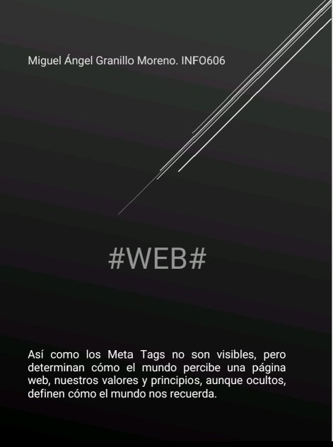

# WEB#
"Así como los Meta Tags no son visibles, pero determinan cómo el mundo percibe una página web, nuestros valores y principios, aunque ocultos, definen cómo el mundo nos recuerda."

¿Qué son los Meta Tags?
Los Meta Tags son etiquetas HTML que proporcionan información sobre una página web a navegadores y motores de búsqueda.
¿Para qué se usan?
- Optimización SEO: Mejorar posicionamiento en buscadores
- Responsive Design: Adaptación a dispositivos móviles
- Control Social Media: Presentación al compartir en redes
Ejemplo Práctico
<!DOCTYPE html>
<html lang="es">
<head>
<meta charset="UTF-8">
<meta name="viewport" content="width=device-width, initial-scale=1.0">
<meta name="description" content="Ejemplo funcional de meta tags">
<meta name="keywords" content="HTML, meta tags, práctica">
<meta name="robots" content="index, follow">
</head>
</html>
Preguntas de Reflexión
-
¿Por qué es clave el meta viewport?
→ Permite la adaptación responsive en dispositivos móviles.
-
¿Cómo benefician los meta tags al SEO?
→ Proporcionan metadatos esenciales para indexación.
-
Riesgo de omitir meta description:
→ Los buscadores generarán descripciones automáticas menos precisas.
-
Ventaja de Open Graph:
→ Control profesional del contenido al compartir en redes sociales.